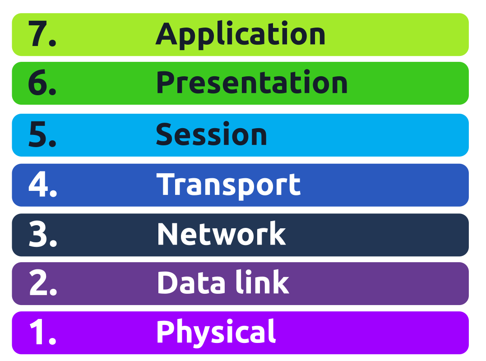
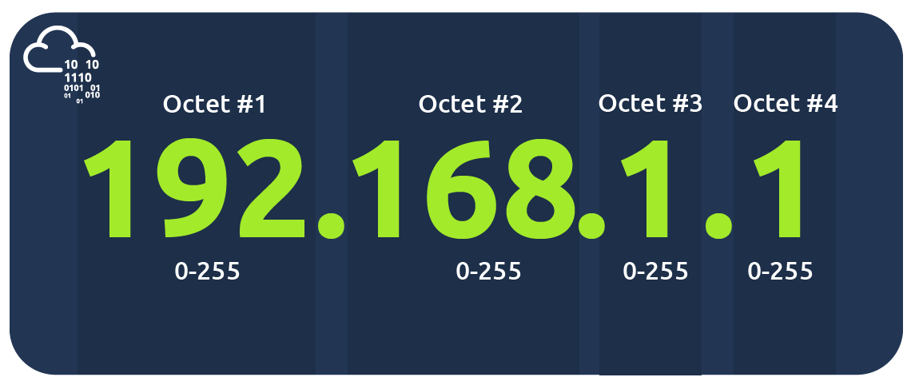
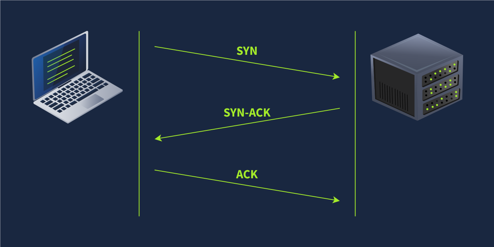

OSI Model
The OSI(Open Systems Interconnection) model is a conceptual model created by ISO(International Organization for Standarization) that describes how network communication should occur in a computer network. So, it provides a framework for computer network communications.

Layer 1 Physical Layer
The Physical Layer of the OSI model includes the physical connections between devices, including medium such as wires. The transmission of data can be done through electrical/optical signals or wireless signals. Depending on the medium different physical component may be required such as wires or antennas.
Layer 2 Data Link Layer
Data link layer represents the protocols that enables data transfer between nodes on the same network segment. A network negment refers to a group of networked i.e. connected devices using the a shared medium or channel to transfer information.
The data link layer refers to the agreement i.e. protocol between different systems on a network segment on how to communicate.
Examples of layer 2 include Ethernet, i.e., 802.3, and WiFi, i.e., 802.11. Ethernet and WiFi addresses are six bytes. Their address is called a MAC address, where MAC stands for Media Access Control. They are usually expressed in hexadecimal format with a colon separating each two hexadecimal digits (one byte). The three leftmost bytes identify the vendor while the rightmost identifies a network interface. Eg: a4:c3:f0(intel):85:ac:2d
Layer 3 Network Layer
The network layer, i.e., layer 3, is concerned with sending data between different networks. In more technical terms, the network layer handles logical addressing and routing, i.e., finding a path to transfer the network packets between the diverse networks.
Examples of the network layer include Internet Protocol (IP), Internet Control Message Protocol (ICMP), and Virtual Private Network (VPN) protocols such as IPSec and SSL/TLS VPN.
Layer 4 Transport Layer
Layer 4, the transport layer, enables end-to-end communication between running applications on different hosts. For example when viewing this site one’s web browser will be connected to a github webserver.
Examples of layer 4 are Transmission Control Protocol (TCP) and User Datagram Protocol (UDP).
Layer 5 Session Layer
The session layer is responsible for establishing, maintaining, and synchronising communication between applications running on different hosts. Establishing a session means initiating communication between applications and negotiating the necessary parameters for the session. Data synchronisation ensures that data is transmitted in the correct order and provides mechanisms for recovery in case of transmission failures.
Examples of the session layer are Network File System (NFS) and Remote Procedure Call (RPC).
Layer 6 Presentation Layer
The presentation layer ensures the data is delivered in a form the application layer can understand.
Layer 6 handles data encoding, compression, and encryption. An example of encoding is character encoding, such as ASCII or Unicode.
Layer 7 Application Layer
The application layer provides network services directly to end-user applications. Our web browser would use the HTTP protocol to request a file, submit a form, or upload a file.
The application layer is the top layer, and you might have encountered many of its protocols as you use different applications. Examples of Layer 7 protocols are HTTP, FTP, DNS, POP3, SMTP, and IMAP. Don’t worry if you are not familiar with all of them.
Table
| Layer Number | Layer Name | Main Function | Example Protocols and Standards |
|---|---|---|---|
| Layer 7 | Application layer | Providing services and interfaces to applications | HTTP, FTP, DNS, POP3, SMTP, IMAP |
| Layer 6 | Presentation layer | Data encoding, encryption, and compression | Unicode, MIME, JPEG, PNG, MPEG |
| Layer 5 | Session layer | Establishing, maintaining, and synchronising sessions | NFS, RPC |
| Layer 4 | Transport layer | End-to-end communication and data segmentation | UDP, TCP |
| Layer 3 | Network layer | Logical addressing and routing between networks | IP, ICMP, IPSec |
| Layer 2 | Data link layer | Reliable data transfer between adjacent nodes | Ethernet (802.3), WiFi (802.11) |
| Layer 1 | Physical layer | Physical data transmission media | Electrical, optical, and wireless signals |
TCP/IP model
TCP/IP (Transmission Control Protocol/Internet Protocola) model was created by the US Department of defense as this model allows a network to continue its operations even after parts of it are broken. Layer Number ISO OSI Model TCP/IP Model (RFC 1122) Protocols
| Layer Number | ISO OSI Model | TCP/IP Model (RFC 1122) | Protocols |
|---|---|---|---|
| 7 | Application Layer | Application Layer | HTTP, HTTPS, FTP, POP3, SMTP, IMAP, Telnet, SSH |
| 6 | Presentation Layer | - | - |
| 5 | Session Layer | - | - |
| 4 | Transport Layer | Transport Layer | TCP, UDP |
| 3 | Network Layer | Internet Layer | IP, ICMP, IPSec |
| 2 | Data Link Layer | Link Layer | Ethernet 802.3, WiFi 802.11 |
| 1 | Physical Layer | - | - |
IP addresses and subnets
IP addresses are unquie identifiers for hosts on a network to recognize and communicate with one another. There are currently two versions of IP adderesses, IPV4 and IPV6. An ipaddress contains 4 octects, each representing decimal numbers from 0-255 an example of which is given below.

0 and 255 are reserverd for network and broadcast addresses respectively, Sending to the broadcast address targets all the hosts on the network. IPv6 was created because IPv4 could not have more than 4 billion unique addresses.
Private IP addresses
- Public IP addresses,
- Private IP addresses, are the two types of IP addresses. RFC(Request For Comments) 1918 defines the following three ranges of private IP addresses:
- 10.0.0.0 - 10.255.255.255 (10/8)
- 172.16.0.0 - 172.31.255.255 (172.16/12)
- 192.168.0.0 - 192.168.255.255 (192.168/16)
In basic terms, Private IP address is a address of a device within a network such as a home, school or hospital network where devices within the network can communicate with each other and for it to access the internet a router capable of Network Address Translation (NAT) with a public ip address is needed.
Routing
A router forwards data packets to the proper network. Usually, a data packet passes through multiple routers before it reaches its final destination. The router functions at layer 3, inspecting the IP address and forwarding the packet to the best network (router) so the packet gets closer to its destination.
UDP and TCP
IP protocols allows us to reach a destination host on a network identified by its ip address. Proper protocols are needed for applications and processes on differnet devices to communicate with one other. UDP(User Datagram Protocol) and TCP(Transmission Control Protocol) are such protocols.
UDP
TCP
